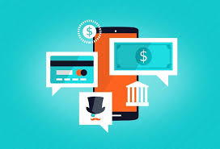
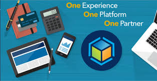

Internet Banking is a convenient way to do banking from the comfort of your home or office. Avoid the queue or delays and try our simple and secure Internet Banking facility for an unmatched online banking experience.
Internet Banking offers you the ease and convenience of transacting in an environment you feel most comfortable with. You can check balances and transactions, transfer funds, pay bills, open fixed and recurring deposits and much more.
With Internet Banking you can pay bills without having to wait in queues. Choose any bill payment option, manage billers and even choose quick pay. Now set your bill pay reminders and never forget to pay on time!
Industry-accepted security practices along with a multi-level authentication system has been put in place to authenticate your identity when you access your Internet Banking account.
You can access through browser without any efforts